2007 After Burn Report
Welcome
While BRC Census has been producing reports since 2002, it is hard to compare recent data with reports from earlier years (before 2013) because of important differences in methodology, from a convenience sample of self-selected Census takers on-playa to a weighted online survey conducted after the Man burns.
Personal Attributes
Area
Which best describes the area in which you live?

Artist
Are you an artist?

Race and Ethnicity
Do you consider yourself to be a person of color?
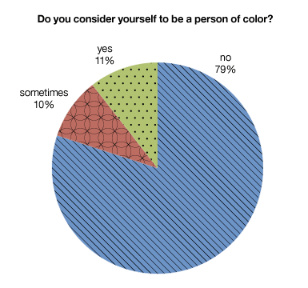
Do you consider yourself to be white?
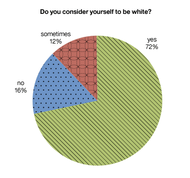
Length of Residence
For how many years have you llived at your current residence?
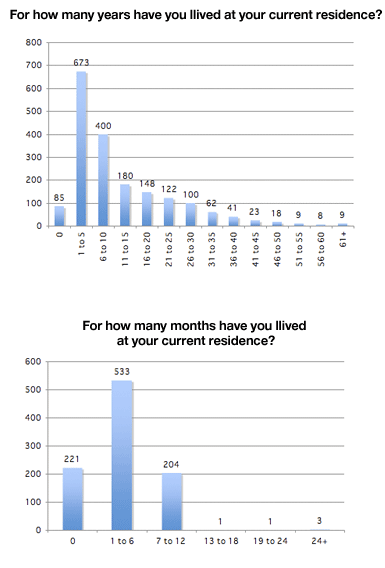
For how many months have you llived at your current residence?
College
Did you graduate from college?

Voter Eligibility
Are you eligible to vote in the US?
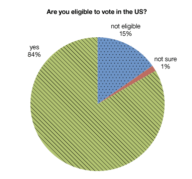
Employment
Are you employed?
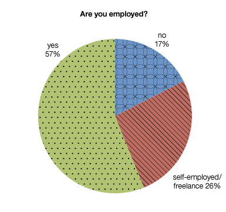
Gender
What is your current gender?

Values
Which values are important to you?

Political Parties
Which political parties have you been a member of?

Religious Services
How many religious services do you attend each year?
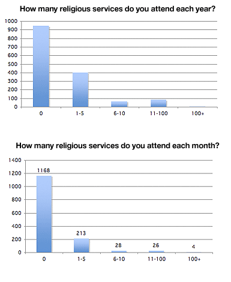
How many religious services do you attend each month?
Schooling
How many years of school have you completed in your lifetime?
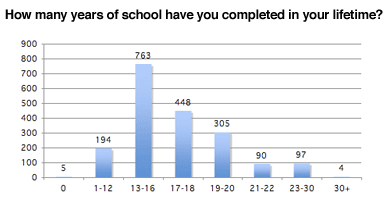
Spirituality
How important is spirituality to you?
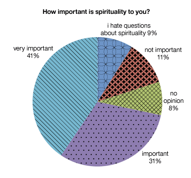
Student
Are you a student?

Voting
How often do you vote?
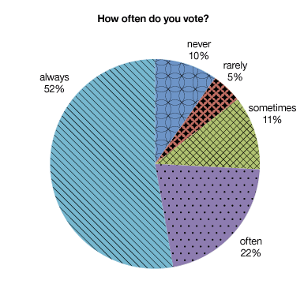
Reasons for Residence
Why do you live where you live?

Family and Relationships
Household
How many adults live in your home?

How many children live in your home?

How many dependents do you have?
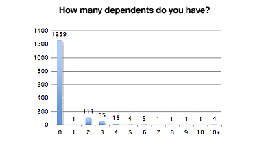
Marital Status
What is your martial status?

Playa Weddings
Were you married at Burning Man?

Outsider at Home
How often do you feel like an outsider at home?
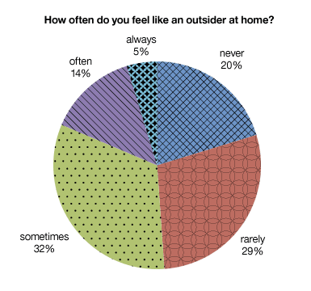
Playa Romance
Have you ever embarked on a significant romantic relationship with someone you met on the playa?
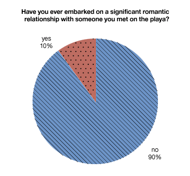
Income and Spending
Income
What was your 2006 income before taxes?

Home Ownership
Do you own a home?
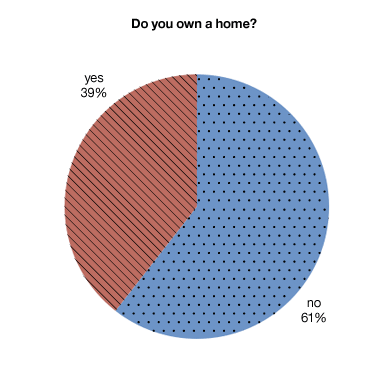
Vehicles
Which vehicles do you use at home during an average week?
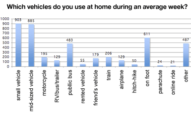
Participation and Activities
Attraction
What attracts you to Burning Man?

BRC as Home
Is Black Rock City home to you?

Decompressions
How many times have you attended another regional burn?
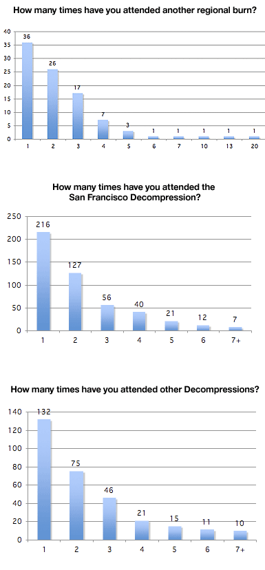
How many times have you attended the San Francisco Decompression?
How many times have you attended other Decompressions?
Free Services
What free services have you used at Burning Man?

What free services have you provided at Burning Man?
Getting There
How did you get to Burning Man?

Risk
At Burning Man I feel there is an increased risk of...
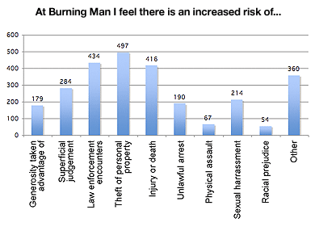
Law Enforcement
The presence of law enforcement officers has been positive
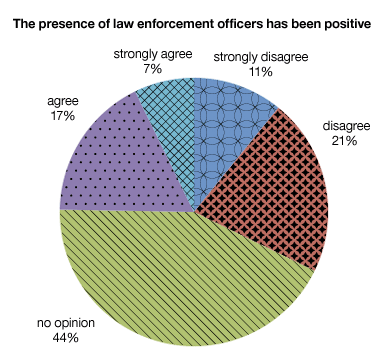
Burner Family
How many people at Burning Man are like family to you?

Outsider at Burning Man
How often do you feel like an outsider at Burning Man?

Regional Events
How many times have you attended Phoenix Festival in Oregon?

How many times have you attended Visionz Festival in Zealand?
How many times have you attended Nowhere in England?
How many times have you attended Playa Del Fuego in Delware?
How many times have you attended Burning Flipside in Austin?
How many times have you attended Rebirth in Hawaii?
How many times have you attended Burning Toast in Arizona?
How many times have you attended Massive Burn in Seattle?
How many times have you attended Recompression in Vancouver?
How many times have you attended Burning Mooseman in Toronto?
Returning
Do you plan on returning to Burning Man?
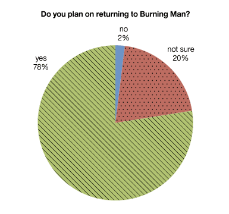
Activities
What are you up to at Burning Man?

Nevada
Do you visit Nevada for other reasons?
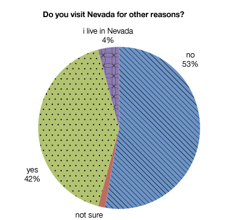
Volunteering
Did you volunteer outside of Burning Man this year?
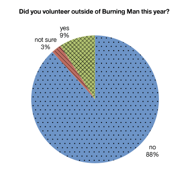
Registered Camp
Are you with a registered camp?

Companions
Who is with you at Burning Man this year?
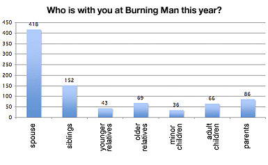
Attendance
Which years did you attend Burning Man?
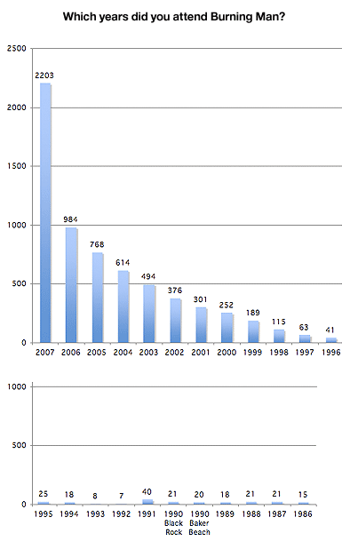
Socializing
Do you socialize with burners outside of Burning Man?